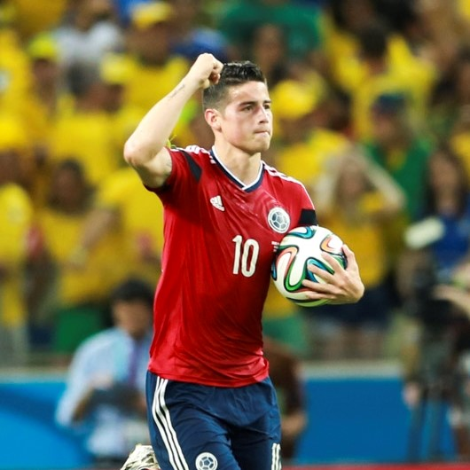
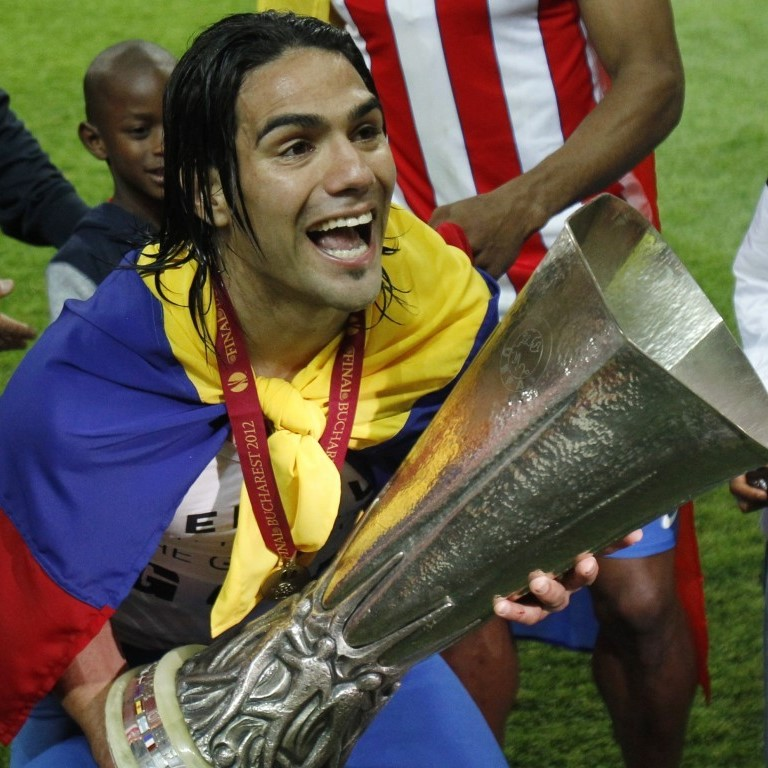
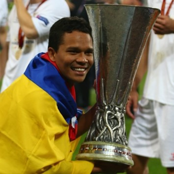
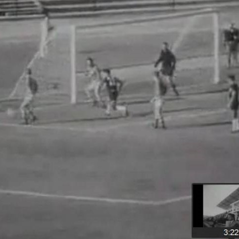
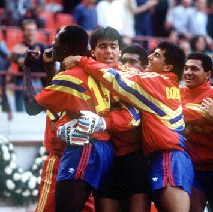

Olimpia era el rival del equipo verde. Nacional perdió la ida 2-0 en Paraguay; sin embargo, igualó el marcador global
en la vuelta. Nacional fue campeón venciendo desde la vía del penal 5-4 a Olimpia.
Once Caldas (Libertadores - 2004)
Sorpresivamente disputaba la final contra Boca Juniors (ARG). Con 0-0 en la ida en La Bombonera, y 1-1 en la vuelta en Manizales, Once Caldas fue campeón de América al vencer 2-0 en los penales.
Independiente Santa Fe (Sudamericana - 2015)
Disputó la final de "la otra mitad de la gloria" con el equipo argentino Huracán. Empatando 0-0 en los partidos de ida y vuelta, definieron el titulo por penales, en el que Santa Fe se consagró 3-1.
Jugadores destacados

James Rodriguez
Actual mediocampista del Real Madrid y de la Selección Colombia. Bota de Oro de la Copa Mundial de la FIFA Brasil 2014 y ganador del premio Puskas al mejor gol del año 2014. Jugador revelación en Argentina y Portugal.

Radamel Falcao
Máximo goleador de Colombia. Campeón de UEFA Europa League con el Porto y el Atletico de Madrid, además de ganar la Supercopa en 2012 aportando 3 goles a su equipo. Una lesión lo alejó de las canchas en 2014 y se espera su regreso.

Carlos Bacca
Bicampeón de la UEFA Europa League con el Sevilla (ESP) en 2014 y 2015, siendo uno de los jugadores más importantes para la consagración del equipo ambas ediciones del campeonato. Actualmente juega en el Milan de Italia.
Historias en mundiales

El único gol olímpico
Marcos Coll es el único jugador que ha marcado un gol olímpico en la historia de los mundiales. El barranquillero anotó en el empate 4-4 contra la URSS en Chile 1962. Se lo anotó al gran Lev Yashin, "la araña negra".

Igualando con el campeón
Final de la fase de grupos: Alemania anota en el 88' acabando con las esperanzas. Sin embargo, en el 90'+2' anota el empate Rincón. Alemania sería campeón del campeonato, y Colombia caería en cuartos.
Quinto mejor equipo
En Brasil 2014, a pesar de quedarse en cuartos de final, Colombia firmó el mejor mundial en su historia, siendo el tercer equipo más goleador, el premio al juego limpio y el quinto mejor equipo (por puntaje).
Los iconos presentes en este sitio web son propiedad de Icons8. Icon pack by Icons8.